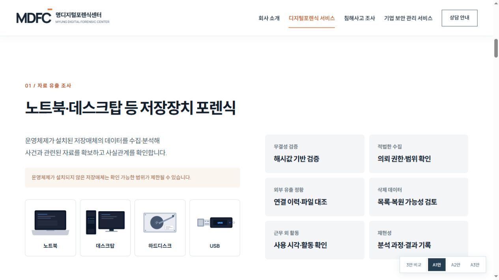
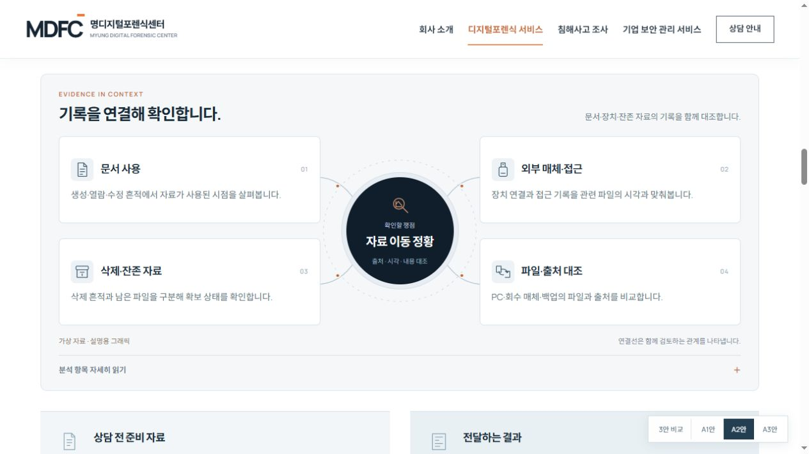
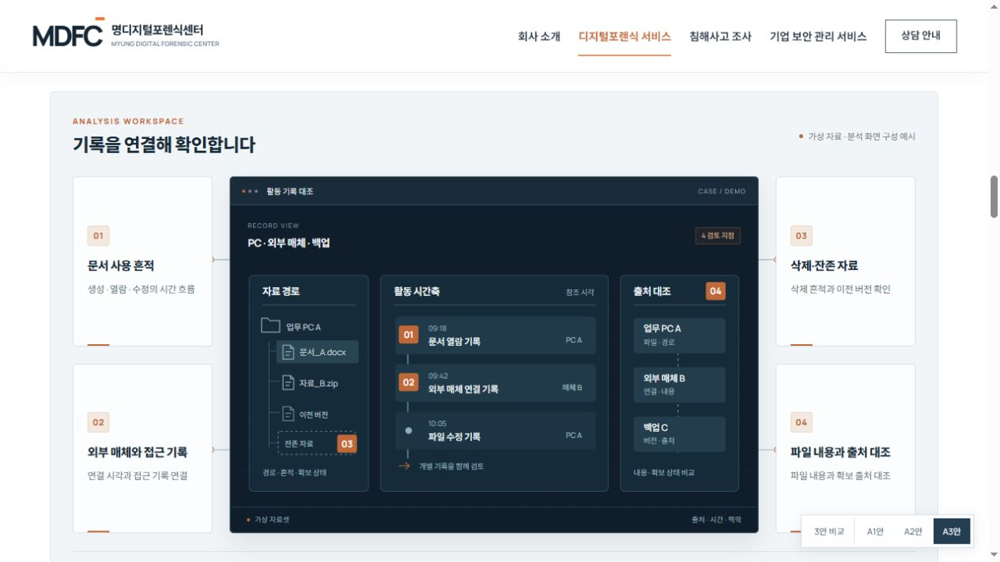

TECHNICAL VISUALS / THREE OPTIONS
A안의 스타일에,
분석을 보여주는 세 가지 방법.
첫 화면과 상담·푸터는 화면을 채우고, 모든 서비스 이미지를 기술 그래픽으로 교체했습니다. 본문은 일반 스크롤이며 분석 항목을 서로 다른 방식으로 시각화했습니다.
A안 기반 미리보기 · 가상 로그 및 설명용 그래픽 사용

A3
분석 뷰와 검토 관점을 함께
분석 워크스페이스형
시간축·대화·파형 뷰와 주석으로 전문적인 분석 과정을 보여줍니다.
시간축 · 대화 · 파형 · 주석
전체 시안 보기 시각화 영역 바로 보기 ↓